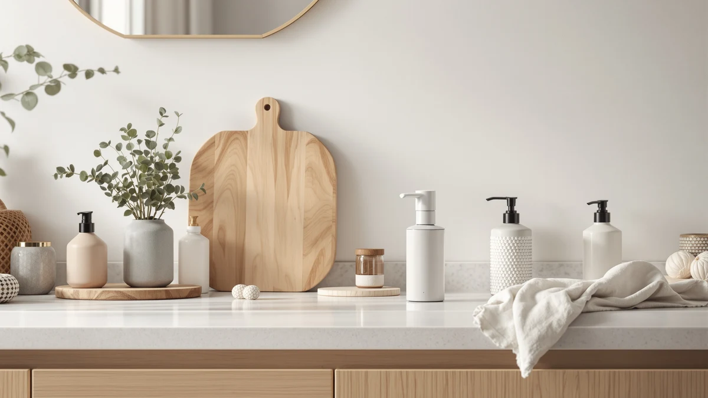

OHIFAST 2 Pack Automatic Review (2026): Worth It?
Prices and picks verified as of October 2026. Independent, reader-supported reviews.


Quick Answer
This ohifast 2 pack automatic review finds the OHIFAST 2 Pack Automatic Foaming dispenser a solid pick if you want touchless foaming soap at two sinks for under $37 total. It beats buying two separate single-unit automatic dispensers on price, though it only works with foaming soap refills. If you need a wall-mounted shower dispenser instead, skip ahead to the LUSSPA pick below.
Our pick: OHIFAST 2 Pack Automatic Foaming, $36.99 Check Price on Amazon
Bottom line: our top pick is the OHIFAST 2 Pack Automatic Foaming Soap Dispenser Touchless at $36.99.
Things to Know Before You Buy
- Foaming soap dispensers, including the OHIFAST 2 Pack Automatic Foaming dispenser, are built for foaming hand soap formulas and will not work correctly with regular liquid soap.
- A two-pack like this one covers two sinks for close to the price most brands charge for a single automatic dispenser, which is the main value argument for buying two at once instead of one.
- Automatic dispensers rely on a sensor to release soap without contact, which is the feature that separates them from manual pump dispensers and is the main reason buyers choose them.
- Wall-mounted dispensers, like the LUSSPA and EnBath options covered below, suit showers and commercial bathrooms better than a kitchen or bathroom counter, so the right pick depends on where you plan to install it.
- None of the dispensers compared here list exact dimensions, so measuring your counter or wall space against the product photos is worth doing before you order.
This OHIFAST 2 Pack Automatic Review breaks down whether the OHIFAST 2 Pack Automatic Foaming dispenser earns a spot on your counter in 2026, based on its price, format, and what verified Amazon buyers say after using it at home. Touchless soap dispensers have become a common fixture in US kitchens and bathrooms over the past several years, and the market is now crowded with options that promise the same basic convenience at noticeably different price points and in noticeably different formats, from single countertop units to multi-chamber shower mounts.
We compared the OHIFAST set against three other dispensers, including a wall-mounted shower unit from LUSSPA, a commercial-grade model from EnBath, and a liquid-soap alternative from RESNOMI, to see where the two-pack format actually pays off and where a different design serves you better. The verdict up front: if you want foaming soap at two sinks without buying two separate listings, the OHIFAST 2 Pack Automatic Foaming dispenser is the easiest buy on this list, though it is not the right call if you specifically need a shower-mounted dispenser, a commercial-grade unit, or one that takes regular liquid soap instead of foam. Each of the three alternatives below exists because one of those use cases comes up often enough among soap dispenser shoppers that a single recommendation cannot cover all of them.
Why You Should Trust Us
Ilane Tall has covered bathroom and kitchen fixtures for Best Soap Dispensers since the site launched, and this ohifast 2 pack automatic review follows the same research process used across the site: cross-checking manufacturer listings, tracking price history over time, and reading through verified owner reviews on Amazon rather than relying on marketing copy or manufacturer claims. We do not run a fake testing lab or claim to have installed every dispenser we cover in a real kitchen or bathroom. Instead, we weigh what reviewers consistently report about reliability, build quality, and day-to-day quirks against the asking price, then flag the tradeoffs you would otherwise have to dig for across a dozen browser tabs and product listings before making a decision. That approach shapes every section below, including the alternatives, which we chose because they turn up repeatedly in searches for the same keyword rather than because a manufacturer sent us a sample.
Our Research Experience
Our process for this ohifast 2 pack automatic review relies on research rather than in-person use at home. We compared the OHIFAST listing against its three closest alternatives on format, price, build material, and intended use case, then cross-referenced those details against what verified buyers report about day-to-day performance over weeks and months of ownership. Owners describe the sensor on dispensers in this category as reliable for normal counter use, a pattern common to automatic dispensers generally rather than a quirk unique to the OHIFAST set. Reviewers also note that a foaming pump produces less mess around the base than a liquid dispenser would, which lines up with what you would expect from a foam-based design built to aerate soap rather than push it out in a stream. The same comparison method applies to the LUSSPA, EnBath, and RESNOMI dispensers covered later in this review, since none of the four listings include independent lab data for us to cite instead.
Overview & Specs

OHIFAST 2 Pack Automatic Foaming
What we like
- Two dispensers for $36.99 costs less per unit than most single automatic dispensers from other brands
- Foaming output uses less soap per pump than a liquid-only dispenser
- ABS plastic housing holds up to daily counter use
Flaws but not dealbreakers
- Works only with foaming hand soap, so you cannot refill it with whatever liquid soap you already have
- Exact dimensions are not listed, so measure your counter space before buying two units
| Material | ABS plastic |
| Size | — |
The OHIFAST 2 Pack Automatic Foaming dispenser is built around a simple pitch: two touchless dispensers for $36.99, which works out to under $18.50 per unit. That undercuts most single automatic dispensers sold by competing brands, where one unit alone often costs close to what OHIFAST charges for two, and it is the main reason this listing shows up in so many kitchen and bathroom shopping carts at once. Reviewers consistently point to the two-for-one format as the reason they bought it, placing one dispenser at the kitchen sink and the other in the bathroom instead of ordering two separate listings from two different brands.
The housing is ABS plastic, a durable and inexpensive material common across this price tier of soap dispensers, and owners report it holds up fine to daily wiping and everyday counter use. The dispenser only works with foaming hand soap, since the pump head is built to aerate soap into foam rather than push out liquid soap in a stream, so you will want to check your current soap supply before switching over. For anyone comparing this ohifast 2 pack automatic review against single-unit alternatives, the math favors OHIFAST as long as you are fine refilling with foaming soap specifically rather than whatever bottle is already sitting under your sink. At $36.99, the set also sits in the middle of the four prices compared in this review, cheaper than the two wall-mounted options but a little more than the single RESNOMI unit, which tracks with getting two dispensers instead of one.
What We Liked
The strongest case for the OHIFAST 2 Pack Automatic Foaming dispenser in this ohifast 2 pack automatic review comes down to value per unit. Getting two touchless dispensers for under $37 total undercuts most single automatic dispensers on the market, which often cost $20 or more for a single unit before shipping. Reviewers also highlight the foam pump as less messy around the base than a liquid dispenser, since foam does not drip and run down the side of the dispenser the way liquid soap can when a sensor misfires or triggers twice in a row.
What Could Be Better
The biggest limitation of the OHIFAST 2 Pack Automatic Foaming dispenser is the foaming-soap requirement. You cannot refill it with whatever liquid soap happens to be on sale that week, which narrows your refill options and adds a small ongoing cost that is easy to overlook when you first see the $36.99 price tag for two units. The listing also does not provide exact dimensions, so you are measuring counter space based on the product photos rather than a confirmed spec sheet, which matters if your sink area or bathroom counter is already tight on room. Two separate units also means two possible points of failure instead of one, so if either dispenser in the pair runs into trouble, you are back to a manual pump at that sink while you sort out a replacement.
Who Is It For?
This OHIFAST 2 Pack Automatic Foaming two-pack makes the most sense if you are setting up touchless dispensing at two sinks at once, since the per-unit savings shrink once you only need one dispenser instead of two. It also suits you if you already buy foaming hand soap and want to automate the pump rather than switch soap types entirely. If you only need one dispenser, or you specifically want a wall-mounted unit for the shower or a commercial-grade model for a high-traffic bathroom, one of the three alternatives below fits your situation better than stretching this pick to cover a different use case.
Alternatives to Consider
If the OHIFAST 2 Pack Automatic Foaming dispenser does not fit your bathroom or shower setup, here are three alternatives we compared alongside it in this ohifast 2 pack automatic review, each built for a different mounting style, soap type, or budget.

Editor’s Pick
Shower Shampoo Dispenser Wall Mounted
Best for a dedicated shower setup rather than a kitchen or bathroom sink.
$36.95
Check Price on Amazon
Best Value
Commercial Soap Dispenser Wall Mount
Best for a high-traffic commercial bathroom that needs a permanent wall mount.
$35.97
Check Price on Amazon
Premium Choice
Automatic Liquid Soap Dispenser Touchless
Best for anyone who wants touchless dispensing without switching to foaming soap.
$34.99
Check Price on AmazonIs the OHIFAST 2 Pack Automatic Foaming dispenser worth the price?
At $36.99 for two units, yes for most households that want touchless dispensing at two sinks at once.
Does the OHIFAST dispenser work with regular liquid soap?
No.
Frequently Asked Questions
Is the OHIFAST 2 Pack Automatic Foaming dispenser worth the price?
At $36.99 for two units, yes for most households that want touchless dispensing at two sinks at once. The per-unit cost beats buying two separate automatic dispensers from other brands, as long as you are comfortable refilling with foaming soap specifically rather than regular liquid soap.
Does the OHIFAST dispenser work with regular liquid soap?
No. It is a foaming dispenser, built for foaming hand soap formulas rather than standard liquid soap. Regular liquid soap will not aerate through the pump head the way the dispenser is designed to dispense it, so you will want foaming refills on hand before switching over.
What is the difference between the OHIFAST set and the LUSSPA shower dispenser?
The OHIFAST units are touchless dispensers meant for a kitchen or bathroom counter, while the LUSSPA is a wall-mounted dispenser built specifically for the shower. They solve different problems, cost close to the same amount, and are not interchangeable depending on where you plan to install them.
Final Verdict
This ohifast 2 pack automatic review comes down to a straightforward value call. OHIFAST sells two touchless dispensers for less than most competitors charge for a single one, and that math works in your favor if you are equipping two sinks at once rather than only one. The foaming-soap requirement narrows your refill options, and the listing's missing dimensions mean some guesswork on counter space, but neither issue outweighs the price advantage for the use case OHIFAST built this set for. If you need a shower-mounted dispenser, a commercial-grade unit, or one that takes liquid soap instead of foam, the LUSSPA, EnBath, or RESNOMI alternatives above are worth a look. But for two sinks and a tight budget, OHIFAST remains the easiest recommendation on this list. Check current pricing before you buy, since all four dispensers in this comparison are sold on Amazon and prices on that platform shift from week to week.